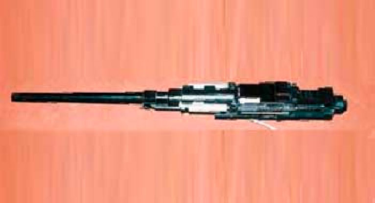

Авиационная пушка АМ-23
Нажми ссылку на видео https://goo.su/b7ao
Поняв перспективность схемы автоматики, предложенной Николаем Михайловичем Афанасьевым, начальник ЦКБ-14, талантливый инженер и организатор Игорь Федорович Дмитриев, не дожидаясь окончательной отработки скорострельного пулемёта, широко развернул работы по созданию на базе схемы Афанасьева нескольких скорострельных авиационных и зенитных пушек калибра 20, 23, 30 и 37 мм. Для этого, кроме Николая Михайловича, к работам были привлечены известные высококвалифицированные конструкторы-оружейники П. Г. Якушев, А. А. Волков, С. А. Ярцев, Г. И. Никитин, А. А. Булкин. Наибольшее внимание уделялось созданию 23-мм пушки под патроны ВЯ (ведущий конструктор Н. М. Афанасьев) и НС-23 (ведущие конструкторы Н. М. Афанасьев и Н. Ф. Макаров). При этом основная ставка делалась на пушку под патрон ВЯ, опытный образец которой под индексом ТКБ-494 был разработан к лету 1949 г. и уже в конце года был собран. Пушка работала надёжно, уверенно выдавая темп стрельбы 1100 выстр./мин. Вслед за ней был разработан и изготовлен опытный образец пушки ТКБ-495 под патрон НС.
Здесь следует сделать отступление, поясняющее сложность проблемы. Пушка ВЯ-23, устанавливаемая во время Великой Отечественной войны на штурмовике Ил-2, могла успешно поражать широкую гамму целей, в том числе танки сверху, но для относительно лёгких истребителей она не подходила по целому ряду соображений. Значительные габариты пушки делали невозможным её монтаж в развале цилиндров двигателя или рядом с ним (традиционные места размещения пушек на истребителях), высокая энергия отдачи существенно влияла на устойчивость самолёта в полёте. С другой стороны, проблема повышения могущества пушечного вооружения истребителей уже стояла, как говорится, «во весь рост» - скорости самолётов непрерывно росли, не за горами был «выход в свет» реактивной авиации. Необходимость повышения огневой производительности диктовала два пути решения проблемы.
Первый путь состоял в увеличении скорострельности. Но возможности по его реализации на базе классических схем автоматики к концу 1940-х годов были практически исчерпаны, и одной из причин этого были параметры существующих пушечных боеприпасов. Не считая устаревшего патрона к 20-мм пушке ШВАК, наиболее ходовым в авиации был патрон к 23-мм пушке ВЯ, обладавший значительными габаритами (длина 237 мм) и импульсом отдачи. Повышение скорострельности пушки, построенной по обычной схеме, под патрон ВЯ, само по себе представляло серьёзную проблему. Величина хода подвижных частей, составлявшая в этом случае не менее длины патрона, не даёт уменьшить время цикла работы автоматики без повышения скоростей достаточно массивных звеньев, а значит ведёт к уменьшению их живучести при неизбежных соударениях. Но даже если такое увеличение темпа будет достигнуто, то силовое воздействие на установку ещё более возрастет, ухудшая лётные качества самолёта.
Второй путь состоял в создании нового 23-мм патрона уменьшенной мощности, за счёт чего можно было сократить габариты и массу как пушки, так и патрона к ней со звеном ленты (а значит и массу боекомплекта), уменьшить влияние выстрела на динамику полёта летательного аппарата. За счёт сэкономленной массы оружия и меньших продольных габаритов патрона можно было обеспечить повышение темпа стрельбы оружия или, например, в качестве временной меры, пока такое оружие не разработано, установить на самолете дополнительные пушки, и всё это вместе - без увеличения негативного влияния отдачи на динамику полёта самолёта при увеличившемся боекомплекте. При этом, конечно, уменьшается начальная скорость снаряда, а значит его действие по защищённым целям, снижается вероятность поражения цели очередью из одной пушки, но повышение скорострельности комплексной установки в значительной степени компенсирует эти недостатки. По такому пути пошли конструкторы ОКБ-16, в 1943 году создав и поставив на вооружение в октябре 1944 года новый малогабаритный 23-мм патрон (длина патрона 200 мм) с уменьшенной начальной скоростью к пушке НС-23. Применение этого патрона пониженной баллистики позволило на 44 % снизить массу пушки по отношению к пушке ВЯ при практически одинаковой с последней огневой производительности. Появление лёгкой пушки НС-23 позволило установить на истребитель Ла-9 четыре такие синхронные пушки!
Однако вопрос создания скорострельных авиационных пушек под мощный патрон ВЯ не был снят. Дело в том, что патрон НС с уменьшенной скоростью снаряда явился в значительной степени плодом далеко неоднозначного компромисса между часто взаимоисключающими запросами авиаторов и разработчиками авиационного вооружения. И не все тогда в Наркомате вооружения положительно восприняли идею применения патрона уменьшенной мощности. Дальнейшее развитие событий подтвердило ряд опасений. Авиации, в первую очередь оборонительным установкам бомбардировщиков, нужны были пушки, которые могли бы встречать огнём скоростные реактивные истребители на дальностях, превышающих дальность эффективной стрельбы их пушечных установок. В противном случае поражение бомбардировщика было практически неизбежным. Поэтому Д. Ф. Устинов настаивал, чтобы для подвижных установок бомбардировщиков была создана скорострельная пушка именно под 23-мм патрон автоматической пушки ВЯ.
В процессе доработок 23-мм пушек (ТКБ-494 и ТКБ-495) был выявлен новый эффект. Оказалось, что при высоких скоростях прихода массивных подвижных частей в крайнее заднее положение, традиционный пружинный буфер перестал оправдывать себя из-за больших потерь энергии в пружине, а также вследствие недостаточной живучести последней. Удовлетворительное решение проблемы предложил Николай Федорович Макаров, известный конструктор 9-мм пистолета ПМ. Взамен традиционного пружинного он сконструировал в затыльнике газовый буфер пушки с высокими энергетическими характеристиками. Газ для его функционирования отводился из газовой каморы оружия по специальному газопроводу, что не сказывалось на внутренней баллистике выстрела. Эта конструкция обеспечила необходимую живучесть буферного узла при высоких скоростях отката подвижных частей. Однако коэффициент восстановления газового буфера обусловил недостаточно энергичный накат подвижных частей. Поэтому Н. Ф. Макаровым была предложена и отработана конструкция реверсивного узла пневмоперезарядки пушек, позволяющая использовать данное устройство и для ускорения наката подвижных частей.
Обе пушки были оснащены пружинными амортизаторами отката, уменьшавшими воздействие отдачи на установку. Характеристики амортизаторов были согласованы с параметрами движения изделия в откате и накате. Эта работа была проведена ЦКБ-14 на высоком научном и техническом уровне, что позволило без дополнительного «разгона» самой пушки, только за счёт оптимизации параметров амортизаторов, повысить темп стрельбы у пушки ТКБ-495 почти на 100 выстр./мин.
Характерной особенностью обеих пушек является размещение газоотводного двигателя автоматики вблизи от снарядного входа ствола. Такое решение продиктовано стремлением убрать внутрь башни газоотводную систему, имеющую значительный поперечный габарит, с целью уменьшения сопротивления набегающему потоку воздуха при стрельбе поперек курса самолета. Кроме того, концентрация масс частей пушки вблизи её центра тяжести уменьшает момент инерции изделия, что, в свою очередь, позволяет увеличить скорости переброса установки и уменьшить требующуюся для этого мощность привода. Последнее является одинаково ценным и для наземных зенитных установок.
В 1951 году обе пушки - ТКБ-494 и ТКБ-495 успешно прошли государственные наземные испытания, а пушка ТКБ-495 прошла и лётные государственные испытания. 20 пушек ТКБ-495 были установлены на различных самолетах. В условиях полёта из этих пушек произвели около 150 тыс. выстрелов, при этом задержек по вине пушки отмечено не было. В процессе испытаний пушки ТКБ-494 под патрон ВЯ выяснилось, что она осуществляет настолько мощное силовое воздействие на установку, что конструкция самолета не выдерживает и деформируется (срываются заклепки). Стало очевидным, что пушку под патрон ВЯ нельзя использовать в существующих подвижных установках.
Одновременно с отработкой пушки ТКБ-495 был усовершенствован патрон НС-23 к ней в части повышения эффективности поражающего действия и введения флегматизированного малоэррозионного прогрессивного пороха для повышения живучести ствола. Усовершенствованный патрон стал называться АМ-23. Этот патрон взаимозаменяем с патроном НС-23, но последний давно не производится.
В мае 1954 года авиационная пушка ТКБ-495 конструкции Н. М. Афанасьева и Н. Ф. Макарова под патрон АМ-23 с длиной ствола 1100 мм и темпом стрельбы 1250-1350 выстр./мин. была принята на вооружение авиации под наименованием АМ-23.
Автоматическая пушка АМ-23 производилась на Тульском машиностроительном заводе им. Рябикова с 1954 года по 1972 год, т. е. на протяжении 18 лет с выпуском в отдельные годы до 10000 шт. в год. Она являлась основным образцом пушечного оборонительного вооружения отечественной авиации. Ей в разные годы вооружались самолёты Ту-16, Ту-95, М-3, Бе-8, Бе-10, Ан-8, Ан-10. В 1967 году за разработку этой пушки Н. М. Афанасьев и Н. Ф. Макаров были удостоены Государственной премии СССР.
Работы по пушке ТКБ-494 под патрон ВЯ не пропали. Имея более высокую начальную скорость снаряда, эта пушка наиболее полно подходила на роль зенитного средства. В 1953 году в ЦКБ-14 были начаты работы по созданию двух зенитных автоматических пушек (зенитных автоматов) ТКБ-507 и ТКБ-507Ж - для лёгкой буксируемой спаренной зенитной установки (ЗУ) и для зенитной самоходной установки (ЗСУ).
Автоматы предназначались для борьбы с самолётами противника на высотах до 1500 м при наклонных дальностях до 2500 м, а также для поражения легкобронированных целей и живой силы, и здесь патрон ВЯ подходил лучше всего.
Разработка зенитных автоматов ТКБ-507 и ТКБ-507Ж производилась под техническим руководством Н. М. Афанасьева. Ведущим по их отработке был Петр Герасимович Якушев. Отличительной особенностью автомата ТКБ-507 было наличие двух быстросъёмных взаимозаменяемых стволов с пламегасителями, механического спускового механизма со специальным блокирующим устройством, благодаря чему на последнем боевом патроне в ленте, досланном в патронник, выстрел не происходил, что позволяло производить открытие огня без предварительной перезарядки. Отличительной особенностью автомата ТКБ-507Ж являлось наличие ствола с жидкостным охлаждением для обеспечения интенсивного режима стрельбы; наличие электроспуска с датчиками пироперезарядки для дистанционного управления огнём.
Для обоих автоматов была проведена модернизация патрона пушки ВЯ - на его базе были разработаны патроны с ОФЗТ снарядом с взрывателем замедленного действия МГ-25 с самоликвидацией и с БТ снарядом в стальной гильзе.
В марте 1960 года на вооружение Советской Армии был принят 23-мм зенитный автомат ТКБ-507 с индексом 2А14 конструкции Н. М. Афанасьева и П. Г. Якушева в составе буксируемой зенитной установки ЗУ-23. В сентябре 1962 года на вооружение Советской Армии был принят 23-мм зенитный автомат ТКБ-507Ж с индексом 2А7 конструкции Н. М. Афанасьева и П. Г.Якушева в составе зенитной самоходной счетверённой установки ЗСУ-23-4 «Шилка». По сравнению с ранее разрабатывающейся авиационной пушкой ТКБ-494 под этот же патрон автоматы 2А7 и 2А14 имели более длинные стволы для повышения начальной скорости снаряда и другой по конструкции спусковой механизм, обеспечивающий удержание подвижных частей перед выстрелом в заднем положении (до нажатия на кнопку стрельбы или педаль спуска). Наличие так называемого «заднего шептала» для оружия сухопутных войск является обязательным требованием по условиям обеспечения безопасности своих войск. Это связано с тем, что при стрельбе с «переднего шептала», когда в заряженном оружии до нажатия на кнопку стрельбы или педаль спуска подвижные части находятся в крайнем переднем положении, а патрон - в патроннике, в перерывах между очередями при интенсивной стрельбе возможны случаи воспламенения досланного в патронник патрона.
Зенитные автоматы для 2А14 и 2А7 выпускались на Тульском машиностроительном заводе им. Рябикова с 1957 по 1985 год. Объёмы производства этих зенитных автоматов системы Н. М. Афанасьева потрясающе огромные.
С использованием схемы автоматики Афанасьева конструкторами ЦКБ-14 и создателями пушки ВЯ А. А. Волковым и С. А. Ярцевым с участием Н. М. Афанасьева были разработаны 30-мм пушка ТКБ-500 под специальный патрон с высокой мощностью снаряда, равной патрону пушки Н-37, и 37-мм пушка ТКБ-508. Обе пушки были доведены до высокой степени отработки, с положительными результатами прошли все этапы предварительных испытаний и были рекомендованы к лётным государственным испытаниям.
Таким образом, предложенная Н. М. Афанасьевым новая схема автоматики обеспечила революционный прорыв в решении проблемы существенного повышения темпа стрельбы авиационного и зенитного вооружения в начале послевоенных годов. Разработки на её основе, приведшие к созданию авиационного пулемета А-12,7, авиационной пушки АМ-23 и зенитных автоматов 2А7 и 2А14, обеспечили потребность вооружённых сил в этом виде вооружения на многие годы и подняли авторитет Тульского конструкторского бюро, которое выиграло творческое соревнование у конструкторских бюро Б. Г. Шпитального и А. Э. Нудельмана. Дальнейшие исследования в области повышения темпа стрельбы авиационных пушек показали, что схема автоматики, предложенная Н. М. Афанасьевым, стала венцом классической ударной одноканальной схемы построения оружия. В дальнейшем, с целью комплексного решения проблемы повышения темпа стрельбы, была обоснована необходимость и осуществлён переход от одноканальной схемы к двуствольной и многоствольной схемам оружия тульской серии ГШ конструкции В. П. Грязева и А. Г. Шипунова - создателей современной отечественной системы СПВ.
| Модификация | АМ-23 |
| Калибр, мм | 23 |
| Тип автоматики | Газоотвод |
| Масса тела орудия, кг | 43 |
| Длина, мм | 1467 |
| Длина ствола, мм | 1000 |
| Темп стрельбы, выстр/мин | 1250-1350 |
| Начальная скорость снаряда, м/с | 690 |
| Емкость магазина | лента |
| Масса снаряда, г. | 200 |
| Тип боеприпаса | 23x115 |